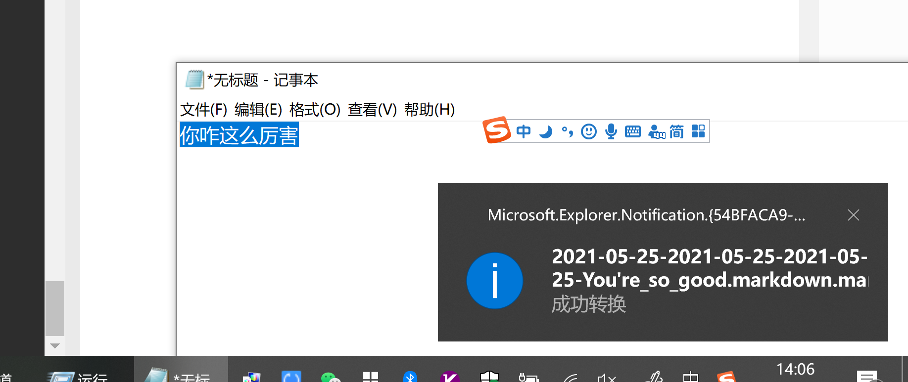

背景
Github Page要求上传文件的时候，给自己的文件一个英文名字，类似这样：kukisama.github.io/_posts/2019-12-13-WhoisZhushuiPigIncloud.markdown
问题是英文认识我，我不认识它。
解决方案
用翻译软件是大势所趋，无论是自用还是要走国际范，让代码走出国门，Microsoft 文本翻译 API都是您的明智之选
本期依然用它来实现，顺便构造一个完整的句子。
功能
2019-12-13-WhoisZhushuiPigIncloud.markdown
首先回顾下名称，包含几个部分
2019-12-13日期形式，用-隔开WhoisZhushuiPigIncloud英文名称.markdown后缀
根据这个，构造一下代码
代码
范例可以看一下这里
里面加了一个狗尾续貂的过程，主要是因为Json解释上的不同，实际想要是这样的格式
1
2
3
4
5
[
{
"text": "不会英语如何用PowerShell翻译文章标题"
}
]
但是如果不是数组（也即是只有一条数据）的话，这个Json会成这个样子
1
2
3
{
"text": "不会英语如何用PowerShell翻译文章标题"
}
接下来开始翻译部分的工作
1
2
3
4
5
6
7
8
9
10
11
12
13
14
15
16
17
18
19
20
#输入你的订阅，订阅需要自己在Azure上创建
$subscriptionKey = '这里是订阅ID'
$postParams = @{ "Ocp-Apim-Subscription-Key" = "$subscriptionKey" }
#构造一个主逻辑函数
function translatorMS ($language, $texts)
{
$APIuri = "https://api.cognitive.microsofttranslator.com/translate?api-version=3.0&to=$language"
$translatordata = Invoke-WebRequest $APIuri ` -Body $texts -ContentType "application/json;charset=utf-8" -Method POST -Headers $postParams
($translatordata.Content | ConvertFrom-Json).translations.text
}
#构造转换Json
function TranslatorTitle ($text){
$text = $text,""| ForEach-Object { $_ | Select-Object @{name = 'text'; e = { $_} }} | ConvertTo-Json
(translatorMS -language "en" -texts $text)[0]
}
####正文
TranslatorTitle PowerShell如何高大上的将中文标题翻译成英文
#############输出结果
How PowerShell tallly translated the Chinese title into English
然后是字符串和时间的组合，以后就是一句话搞定
1
2
3
4
5
6
7
8
function TitlePlus ($text){
$title=(TranslatorTitle $text).replace(' ','_')
(get-date -Format yyyy-MM-dd-)+$title+'.markdown'
}
TitlePlus PowerShell如何高大上的将中文标题翻译成英文
2021-05-25-How_PowerShell_tallly_translated_the_Chinese_title_into_English.markdown
一点儿细节
代码到这就完成了
- 用的时候把它集成在别的工具里面
- 比如点击一个按钮后，检查剪贴板，开始翻译
- 翻译结束右下角弹窗，并将结果塞进剪贴板
- 到网页上一黏贴，齐活儿。
